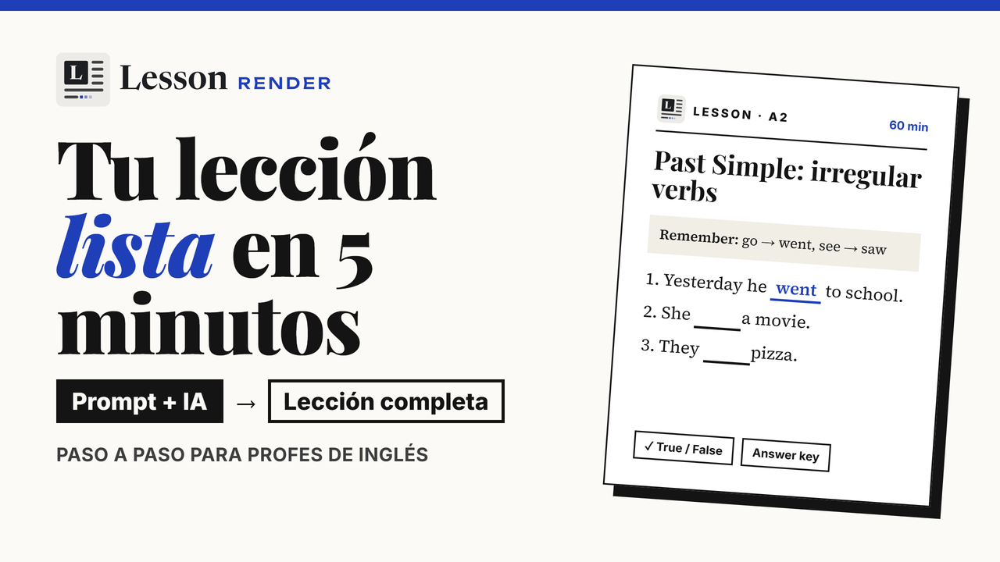

Un podcast sobre muebles de un edificio
La primera clase hecha con el sistema. El vocabulario apuntaba a lo que el grupo hace todos los días, y apareció alguna palabra nueva relacionada con el tema de costado.
LessonRender convierte un texto en una lección de inglés lista para usar en clase: verdadero o falso, huecos para completar, multiple choice y listening con clips de audio o de YouTube. La lección la escribe una IA, incluso una gratuita como DeepSeek, y LessonRender la muestra con un diseño cuidado.


Las IA gratuitas escriben buenos ejercicios, pero les cuesta armar una página linda. LessonRender separa las dos tareas. El diseño vive en un solo archivo, index.html, que ya está hecho. Cada clase es un archivo de texto, data.md, que cualquier IA puede escribir en un minuto.
Ponés los dos archivos en la misma carpeta, junto con tus audios si los tenés, y abrís index.html. La lección aparece sola.
Pesa 110 KB, tiene seis estilos claros y oscuros y funciona sin conexión.
Texto plano con una marca simple para cada ejercicio. Lo escribe la IA o lo escribís vos.

Si abrís un data.md con cualquier editor de texto, se lee casi como una hoja de ejercicios. Para cambiar una oración o borrar un ejercicio, lo editás, guardás y recargás la página.
| Lo que escribís | Lo que aparece |
|---|---|
[tf] The client already had a site. [t] [tf] The house sits high on the hill. [f] |
Un verdadero o falso. La letra del final indica la respuesta correcta. |
In the 50s, Toronto decided it needed a new {city hall}. |
Un texto con huecos. Las palabras entre llaves pasan a ser los espacios para completar. |
What does Mills want to show?
- The price of the house
* How the house fits the land
- The size of the river |
Un multiple choice. El asterisco marca la opción correcta. |
[play https://www.youtube.com/watch?v=p2hnrfN58H4
00:06 01:25 "Clip A – the land and the river"] |
Un clip que se reproduce solo entre esos dos tiempos, con botón para empezar de nuevo. |

Cada estilo tiene su versión clara y su versión oscura. El contenido es el mismo; cambian la tipografía, los colores y el clima de la página.
La forma más rápida es el flash kit: le das a una IA tu material (un artículo, tus notas, o una transcripción) y arma toda la lección en un solo paso.

Del material a la lección completa, con el prompt del kit y la IA que prefieras.
Un .zip chico con tres archivos: las instrucciones para la IA, SKILL.md y un link a LessonRender online.

Abrí DeepSeek, Claude, ChatGPT o Gemini. Adjuntá SKILL.md y tu material. Abrí el archivo de instrucciones, completá el nivel y el grupo, copiá el prompt y envialo. En DeepSeek conviene activar Deep thinking.

Copiá la respuesta de la IA, o descargala, y pegala o abrila en LessonRender online. Si tu lección usa tus propias imágenes o grabaciones, guardala como data.md en una carpeta junto a index.html y esos archivos.

Para que los clips empiecen y terminen donde corresponde, la IA necesita saber en qué segundo se dice cada cosa. Gemini lee los videos de YouTube: con el prompt del kit te devuelve la transcripción con marcas de tiempo cada 5 o 10 segundos. Esa transcripción es el material que le das a la IA en el paso 2.
Las lecciones con YouTube se abren desde LessonRender online o desde tu propio sitio.

SKILL.md incluye reglas pedagógicas: cómo empezar con un warm-up, cuándo presentar el vocabulario, cuántos ejercicios poner y qué tan largos deben ser los clips para cada nivel del Marco Común Europeo, de A1 a C2.
Que preparan cada clase a medida y no pueden pagar una plataforma.
Que necesitan material adaptado para sus cursos.
Que saben el idioma y quieren una guía para armar una clase.
Que encuentran en las reglas una estructura probada.

Por seguridad, los navegadores limitan lo que una página puede cargar. Por eso cada forma de abrir una lección admite cosas distintas.
| La lección incluye | Desde tu compu | LessonRender online | Tu propio sitio |
|---|---|---|---|
| Solo texto y ejercicios | ✓ | ✓ | ✓ |
| Tus audios o videos (MP3, MP4) | ✓ | ✗ | ✓ |
| Videos de YouTube | ✗ | ✓ | ✓ |
| Tus audios y YouTube en la misma clase | ✗ | ✗ | ✓ |
Al abrir index.html con doble clic, Chrome y Edge te piden la carpeta de la lección la primera vez y después la abren solos. En otros navegadores elegís el data.md o pegás su texto. En un sitio web, la lección se carga sola.
LessonRender tampoco tiene usuarios ni guarda resultados. Para eso existe Moodle, con el costo de un servidor dedicado. Esto es gratis, liviano y funciona en cualquier hosting barato o en GitHub Pages.
La primera clase hecha con el sistema. El vocabulario apuntaba a lo que el grupo hace todos los días, y apareció alguna palabra nueva relacionada con el tema de costado.

Un repaso de presente simple y presente continuo a partir de un texto sobre su juego favorito, escrito por la IA a pedido.
Se pasó la mitad de la clase riéndose. En una clase de gramática.